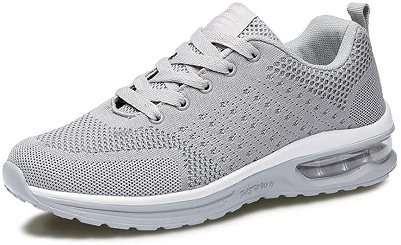
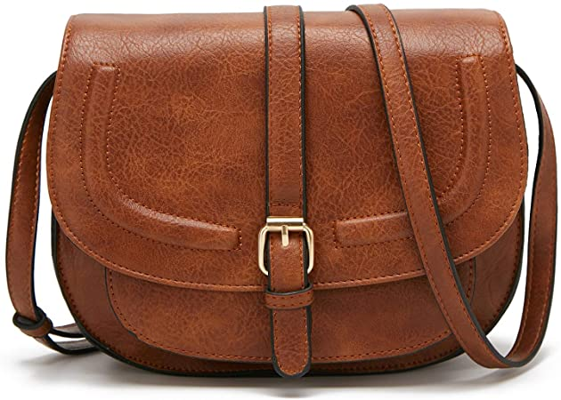
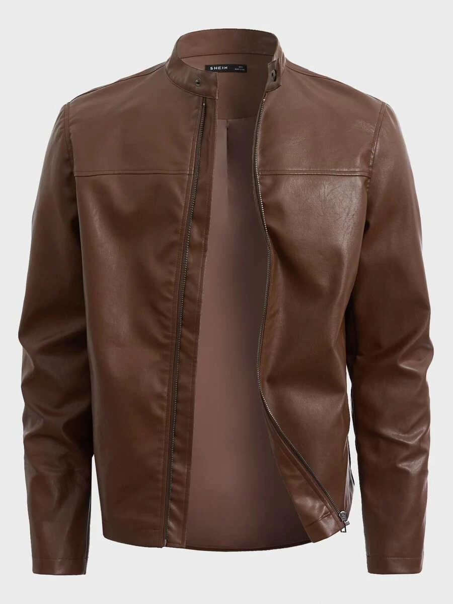
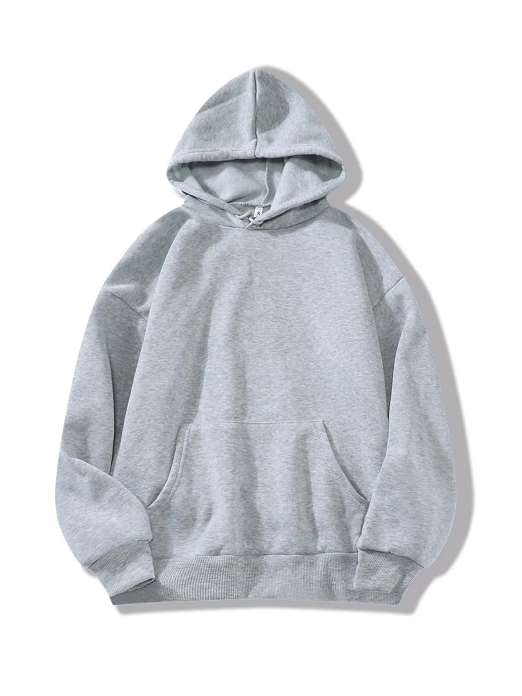

1.
Scarpe da ginnastica
Le scarpe da ginnastica sono sempre state molto popolari
per il loro comfort e la loro versatilità. Negli ultimi anni,
le sneaker di marca sono diventate un vero e proprio status symbol.
Vi sono anche diverse marche che il negozio tratta
e ognuna di queste è presente in tutto il mercato globale.

2.
Borse a tracolla
Le borse a tracolla sono un accessorio must-have per ogni outfit.
Sono perfette per portare con sé i propri effetti personali durante il giorno.

3.
Giacche di pelle
la giacca di pelle è un capo di abbigliamento iconico che non passa mai di moda.
È perfetta per un look rock e può essere abbinata a qualsiasi outfit.

4.
Jeans
i jeans skinny sono un altro must-have del guardaroba.
Sono perfetti per creare un look casual ma alla moda.

5.
Felpe con cappuccio
le felpe con cappuccio sono un altro capo di abbigliamento
essenziale per ogni guardaroba. Sono comode e perfette per un look casual.
